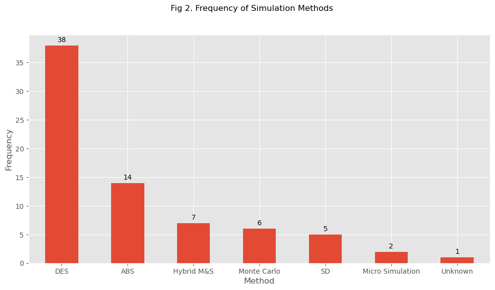

import pandas as pd
import numpy as np
import matplotlib.pyplot as plt
from typing import Optional
# use gglot style for all matplotlib
plt.style.use("ggplot")Analysis
WORK IN PROGRESS Please note that the analysis in this notebook is subject to change as the review evolves.
This notebook contains the Python script that analyses the data extracted from the STRESS review.
- TM Query: There are quite a few NaN’s in the data. We need to clarify what is going on here. For example, a NaN in the model available section - I believe this should just be no. Perhaps excluded because they completely ignored section 6?
1. Imports
1.1 Standard imports
1.2 Review pipeline imports
from data_pipeline import load_review_dataset, filter_to_application_studies2. Constants
# N/A3. Utility functions
Some simple functions repeatedly used for plotting or analysing datasets.
Code
def frequency_bar_chart(
data: pd.DataFrame,
x_label: str,
y_label: Optional[str] = "Frequency",
rotate_x_ticks: Optional[int] = 0,
figsize: Optional[int | int] = (12, 6),
):
"""
Create bar chart of the selected categorical variable.
Returns matplotlib figure and axis.
Parameters:
---------
data: pd.DataFrame
Frequency dataset for bar chart
x_label: str
Label to display on x-axis
y_label: str, optional (default = "Frequency")
Label to display on y-axis
rotate_x_ticks: int, optional (default = 0)
Degress to rotate the x axis text (0 for no rotation)
figsize: Tuple(int, int), optional (default=(12,6)
The size of the matplotlib picture.
Returns:
-------
out: fig and axis of plot
"""
fig = plt.figure(figsize=figsize)
ax = fig.add_subplot()
ax = data.plot(kind="bar", ax=ax)
_ = ax.set_xlabel(x_label)
_ = ax.set_ylabel(y_label)
# Add data labels on the bars
_ = ax.bar_label(ax.containers[0], label_type="edge", padding=3)
# rotate x axis text
_ = plt.xticks(rotation=rotate_x_ticks)
return fig, ax4. Read and clean review data
clean_review = load_review_dataset()# rows and columns n's
clean_review.shape(165, 25)5. Filter to empirical studies only
Here we separate the studies that have used the STRESS guidelines in second dataframe i.e. limit to studies that have used STRESS for documenting a model. This is stored in a notebook level variable called empirical_studies
Reminder: Filtering is done using the ‘used’ field. Details are available in the filtering notebook
empirical_studies = filter_to_application_studies(clean_review)# number of studies that used STRESS as intended i.e. to document
empirical_studies.shape(73, 25)6. Results
Year of publication
TM notes for additional analysis
TM Query (1): 2024 obviously partial, as it will take us a while to do this study we should update again in 2025 to get all 2024 papers if we can
TM Query (2): WE should prob show no. citations OVERALL by year as well
def figure_1(data: pd.DataFrame, figsize: Optional[int | int] = (12, 6)):
"""
Create bar chart of publications by year (ordered)
Parameters:
---------
data: pd.DataFrame
The cleaned + filtered review data to plot
figsize = Tuple(int, int)
Size of matplotlib figure
Returns:
-------
out: fig and axis of plot
"""
# The frequency of papers that have used STRESS guidelines
# based on the publication year
year_freq = data["year"].value_counts(dropna=False).sort_index(ascending=True)
return frequency_bar_chart(
data=year_freq, x_label="Year", y_label="Publications"
)fig, ax = figure_1(empirical_studies, False)
fig.savefig("./figures/figure_1.png", dpi=300, bbox_inches="tight")
_ = fig.suptitle("Fig 1. Frequency of Empirical Papers over Time")Simulation method
Data notes
Hybrid M&S could be the hybridisation of simulation methods (e.g. SD+DES) or hybridisation of a simulation method with data science approach (e.g. Monte Carlo simulation + Machine learning)
def figure_2(data: pd.DataFrame, figsize: Optional[int | int] = (12, 6)):
"""
Create bar chart of simulation method used in studies
Parameters:
---------
data: pd.DataFrame
The cleaned + filtered review data to plot
figsize = Tuple(int, int)
Size of matplotlib figure
Returns:
-------
out: fig and axis of plot
"""
method_freq = data["method"].value_counts(dropna=False)
return frequency_bar_chart(
data=method_freq, x_label="Method", y_label="Frequency"
)fig, ax = figure_2(empirical_studies, False)
fig.savefig("./figures/figure_2.png", dpi=300, bbox_inches="tight")
_ = fig.suptitle("Fig 2. Frequency of Simulation Methods")
Application area
def figure_3(data: pd.DataFrame, figsize: Optional[int | int] = (12, 6)):
"""Frequency of software/coding language usage as bar chart
Parameters:
---------
data: pd.DataFrame
The cleaned + filtered review data to plot
figsize = Tuple(int, int)
Size of matplotlib figure
Returns:
-------
out: fig and axis of plot
"""
freq = data["application_area"].value_counts(dropna=False)
return frequency_bar_chart(
data=freq,
x_label="Application area",
y_label="Frequency",
rotate_x_ticks=90,
)fig, ax = figure_3(empirical_studies, False)
fig.savefig("./figures/figure_3.png", dpi=300, bbox_inches="tight")
_ = fig.suptitle("Fig 3. Application area")
Article Type
def figure_4(data: pd.DataFrame, figsize: Optional[int | int] = (12, 6)):
"""Frequency of software/coding language usage as bar chart
Parameters:
---------
data: pd.DataFrame
The cleaned + filtered review data to plot
figsize = Tuple(int, int)
Size of matplotlib figure
Returns:
-------
out: fig and axis of plot
"""
freq = data["type_of_paper"].value_counts(dropna=False)
return frequency_bar_chart(
data=freq,
x_label="Application area",
y_label="Frequency",
rotate_x_ticks=0,
)fig, ax = figure_4(empirical_studies, False)
fig.savefig("./figures/figure_4.png", dpi=300, bbox_inches="tight")
_ = fig.suptitle("Fig 4. Breakdown of the literature")How was STRESS used?
The guideline have been listed either in main text, or in appendix. Also it might be in the form of checklist, structured (that contains the guidelines’ elements with description), and unstructured (which might contain some elements of the guideline).
def figure_4(data: pd.DataFrame, figsize: Optional[int | int] = (12, 6)):
"""Frequency of type of paper
Type of papers that have used STRESS; which includes journal, conference,
workshop, and preprints papers as well as thesis.
Parameters:
---------
data: pd.DataFrame
The cleaned + filtered review data to plot
figsize = Tuple(int, int)
Size of matplotlib figure
Returns:
-------
out: fig and axis of plot
"""
freq = data["stress_implementation"].value_counts(dropna=False)
return frequency_bar_chart(
data=freq, x_label="Approach", y_label="Frequency", rotate_x_ticks=90
)fig, ax = figure_4(empirical_studies, False)
fig.savefig("./figures/figure_4.png", dpi=300, bbox_inches="tight")
_ = fig.suptitle(
"Fig 4. Frequency of Papers Based on How They Implemented STRESS Guidelines"
)Usage by Journal/conference/other
TM query: Computational Management Science appears twice? small different in raw data recording?
TM query: There are 3 univrsity of southampton and 2 Lancaster Uni publications. I think we need to double check that we are not double counting with academic journals or conference papers.
Journal_freq = empirical_studies["journal"].value_counts(dropna=False)
Journal_freq = Journal_freq.reset_index()
Journal_freq.columns = ["Journal", "Frequency"]
Journal_freq.set_index(["Journal"], inplace=True)
# Print the resulting DataFrame
Journal_freq| Frequency | |
|---|---|
| Journal | |
| Journal of Simulation | 11 |
| Winter Simulation Conference | 6 |
| BMJ | 4 |
| University of Southampton | 3 |
| Proceedings of the Operational Research Society Simulation Workshop | 3 |
| Operations Research for Health Care | 3 |
| JAMA | 2 |
| Lancaster University | 2 |
| Healthcare | 2 |
| Plos one | 2 |
| Health Care Management Science | 2 |
| Health Systems | 2 |
| Journal of the Operational Research Society | 2 |
| Istanbul Business Research | 2 |
| BMC Health Services Research | 2 |
| medRxiv | 2 |
| International Journal of Nursing Studies | 1 |
| Health and Social Care Delivery Research | 1 |
| Plos Medicine | 1 |
| Anesthesiology | 1 |
| Frontiers in Oncology | 1 |
| Value in Health | 1 |
| Medical Decision Making | 1 |
| Water | 1 |
| cancers | 1 |
| arXiv | 1 |
| Contemporary Clinical Trials | 1 |
| Computational Management Science | 1 |
| Journal of Evaluation in Clinical Practice | 1 |
| Electronics | 1 |
| Translational Lung Cancer Research | 1 |
| Cureus | 1 |
| Frontiers in Neurology | 1 |
| OSF | 1 |
| Stroke | 1 |
| NaN | 1 |
| Norwegian University of Science and Technology | 1 |
| National University of Irland | 1 |
| Computational Management Science | 1 |
Full versus partial usage of STRESS sections
TM note - we should provide %’s as well as counts
Partially_freq = empirical_studies["partially"].value_counts()
Partially_freq = Partially_freq.reset_index()
Partially_freq.columns = ["Partially?", "Frequency"]
# Print the resulting DataFrame
Partially_freq| Partially? | Frequency | |
|---|---|---|
| 0 | Yes | 45 |
| 1 | No | 25 |
| 2 | DP | 0 |
Is the coded model available?
TM note: cannot be shared for confidential reasons. I think this should be recoded to = “No”
TM note: will be available in the future should be recoded as “No”
TM: note: the NaN’s should be recoded as “No” ?
empirical_studies["source_code_access"].value_counts(dropna=False)source_code_access
NaN 33
Yes 23
Upon request 11
No 3
Will be available in future 2
Cannot be shared due to confidential reason 1
Name: count, dtype: int64code_access_freq = empirical_studies["source_code_access"].value_counts(dropna=False)
plt.figure(figsize=(10, 8))
SCAB = code_access_freq.plot(kind="bar")
plt.title("Fig 7. Frequency of Papers based on Type of Source-Code Access")
plt.xlabel("Type of Access")
plt.ylabel("Frequency")
# Add data labels on the bars
SCAB.bar_label(SCAB.containers[0], label_type="edge", padding=3)
plt.show()